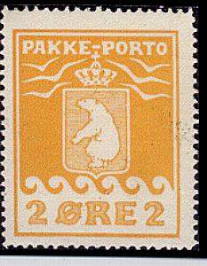
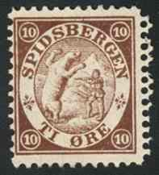
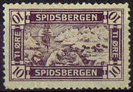

Grønland
Note: on my website many of the
pictures can not be seen! They are of course present in the
catalogue;
contact me if you want to purchase the catalogue.



1 o olive 2 o yellow 5 o brown 10 o green 15 o lilac 20 o red 70 o violet 1 K yellow 3 K redbrown
Value of the stamps |
|||
vc = very common c = common * = not so common ** = uncommon |
*** = very uncommon R = rare RR = very rare RRR = extremely rare |
||
| Value | Unused | Used | Remarks |
| 1 o | * | * | |
| 2 o | ** | ** | |
| 5 o | * | * | |
| 10 o | * | * | |
| 15 o | * | * | |
| 20 o | * | * | |
| 70 o | ** | ** | |
| 1 K | ** | ** | |
| 3 K | *** | *** | |
Cancels: About 25 different cancels were used, most in black or purple (but also red, source: the below mentioned website).

(Avene number cancel: savings stamp)
From 1927 to 1938 these stamps were also used as savings stamps (some of them with the above shown 'avane' cancel).
Reprints (forgeries?) exist of these stamps. From the below mentioned website I quote:
"In the 1970s, reprints of the Pakke-Porto stamps
were produced, using the original printing blocks that were found
in the Ministry for Greenland, the new supervising office of KGH.
The reprints are made in such a way that the collector can
distinguish between the different printings, the special
re-perforations of sheets with imperf sheet margins, and identify
some of the major varieties. The ministry, to collect funds for
cultural activities in Greenland, sold them."
N.B: 'KGH' stand for Royal Greenland Trade Company (Kongelige
Grønlandske Handel)
Interesting website about the history and stamps of Greenland: http://www.scc-online.org/ph00may-greenland%20philately.pdf
A stamp with inscription 'GRØNLANDSKE LUFTPOST' (airmail of Greenland) was issued in 1933. It has dove with a letter flying above icebergs as its design. I have never seen a picture of this stamp.

King (small sized stamps): 1 o black, 5 o brown, 7 o green, 10 o violet, 15 o red, 20 o red.
Polar bear (larger sized stamps): 30 o blue, 40 o blue, 1 K brown. Surcharged (1956): '60 øre' on 40 o blue, '60 øre' on 1 K brown.
Seal: 1 o green and blue, 5 o brown and olive, 7 o green and
black.
King on a horse: 10 o blue and green, 15 o red and blue.
Sledge with dogs: 30 o grey and brown.
Polar bear: 1 K brown and grey.
Canoe: 2 K black and green.
Bird: 5 K violet and black.
Exists with overprint: 'DANMARK BEFRIET 5 MAI. 1945'.
King (small sized stamps, 'FIX' in upper left corner): 1 o olive, 5 o brown, 10 o green, 15 o violet, 25 o red, 30 o blue, 30 o red.
Ship (Gustav Holm) with iceberg: 50 o blue, 1 K brown, 1 K grey, 2 K red, 5 K grey. Overprinted with cross and surcharged (1958): 30+10 on 50 o blue.
10 o green (Knud Rasmussen) 15 o red (Flag, ship and mountains) 25 o violet (rob) 30 o blue (Thule observation post) 45 o grey (Cape York)
250000 series of these stamps were printed.
Value of the stamps |
|||
vc = very common c = common * = not so common ** = uncommon |
*** = very uncommon R = rare RR = very rare RRR = extremely rare |
||
| Value | Unused | Used | Remarks |
| All values | * | * | |
I have seen reprints in a souvenir sheet with accompagnying text, issued by the Danish Filatelic Society (in collaboration with the Red Cross?) using the original stones. Apparently this sheet was issued to commemorate Knud Rasmussen. The perforation seems to be different from the stamps above.
Reprint souvenir sheet, reduced size


5 o blue 10 o brown 20 o red (slightly different design)
5 o green 10 o red 20 o blue
(Reduced size)
20 o brown Other values might exist.

5 o brown 10 o violet 20 o grey 30 o brown 50 o olive Other values might exist.
(Reduced size)
The following information was passed on to me by
Magne Josefsen (Norway):
"This label was used by tourists on cruise ships
travelling in the arctic sea visiting Spitsbergen. They were used
in addition to normal stamps on letters/postcards. It was issued
in 1905. The design shows a shield with a walking polar beer and
two stars. Probably issued by what was later called "Troms
Fylkes Dampskipsselskap". Troms is a county (fylke) in
northern Norway, Dampskipsselskap = steam ship company."
(thanks Magne for this information).
(Reduced size)
I've seen some stamps with inscription 'NORDKAP', see with a ship and rocks. The values that are known to me are: 5 øre green, 5 øre brown, blue without value and black on green paper without value (information thanks to Magne Josefsen; other values might exist). These stamps were used on ships like the Spitsbergen stamps.
According to Magne Josefsen (Norway) this is actually a label used by tourists on cruise ships travelling in the arctic sea visiting Spitsbergen. They were used in addition to normal stamps on letters/postcards. This label was issued in 1897. It pictures a walrus on flake of ice in the midnight sun. Issued by W. Bade, a German captain. (Thanks Magne for this information). Note the German cancel on this label (Wurzen 18 7 03)! I have also seen this label with cancel 'SPITZBERGEN NORDK???' (I couldn't read the last letters).
Recently (2003), some local stamps were issued for Svalbard, they have the inscription 'LOKALPOST' I have seen the values 400 (polar bear) and 800 (bird).
{kind=link}